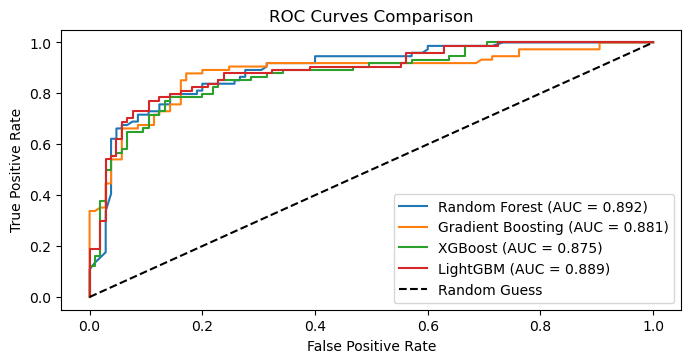
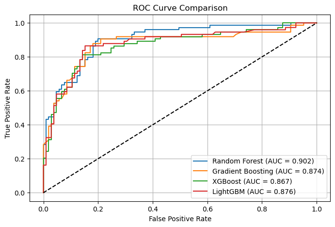
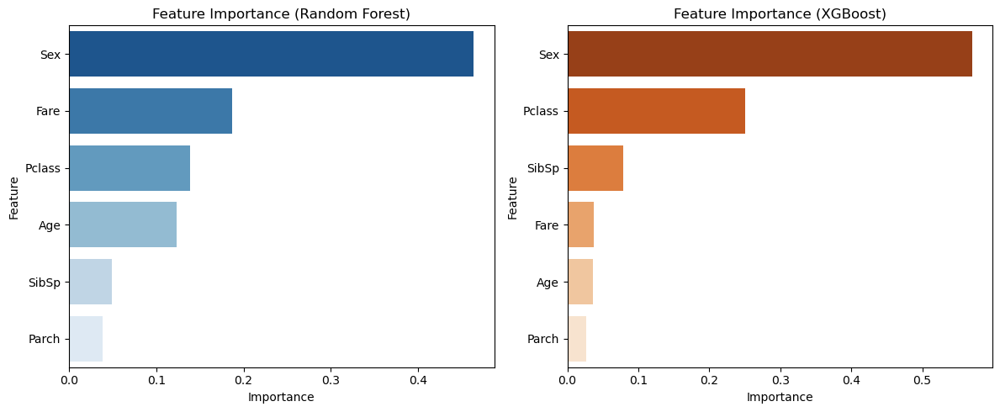
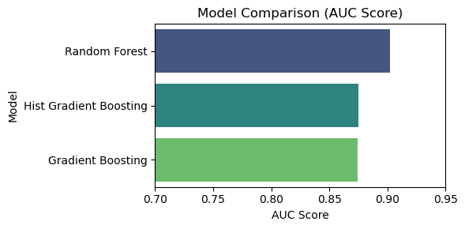
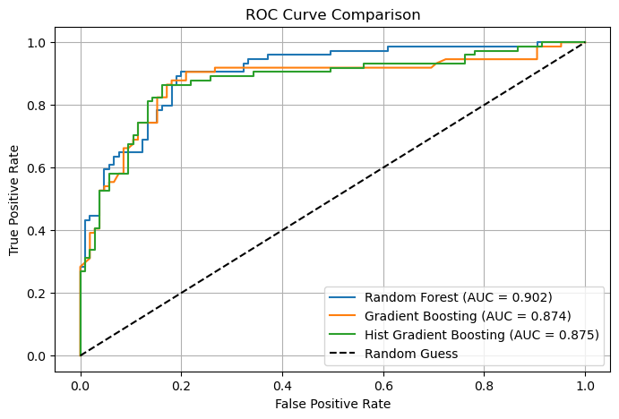
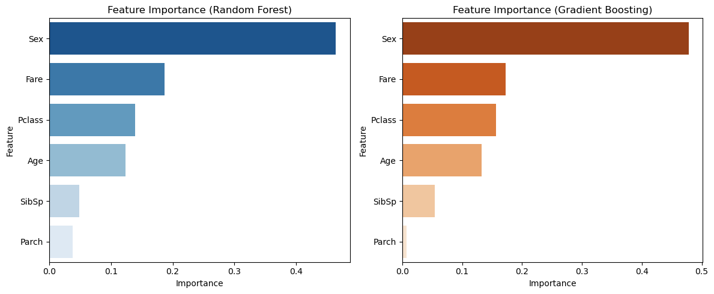

Ch 18. Tree-Based Models#
1. Data Input#

Source: The dataset is from the Kaggle machine learning competition “Titanic - Machine Learning from Disaster.”
Gemini: Explanation#
The titanic_train.csv file consists of information on 891 passengers with 12 columns.
Variable Descriptions#
Variable |
Description |
Data Type |
Notes |
|---|---|---|---|
|
Unique passenger ID |
Integer |
Simple identifier |
|
Survival status |
Integer |
0 = Died, 1 = Survived (target variable) |
|
Ticket class |
Integer |
1 = 1st, 2 = 2nd, 3 = 3rd |
|
Passenger name |
String |
|
|
Sex |
String |
male, female |
|
Age |
Float |
177 missing values |
|
Number of siblings/spouses aboard |
Integer |
|
|
Number of parents/children aboard |
Integer |
|
|
Ticket number |
String |
|
|
Passenger fare |
Float |
|
|
Cabin number |
String |
687 missing values (approximately 77% of data is missing) |
|
Port of embarkation |
String |
C = Cherbourg, Q = Queenstown, S = Southampton (2 missing values) |
Dataset Characteristics#
Missing Values:
The
Cabinvariable has 687 missing values, meaning most of the data is empty.The
Agevariable has 177 missing values, and handling these is important for the analysis.The
Embarkedvariable has 2 missing values.
Data Types:
AgeandFareare float types.Name,Sex,Ticket,Cabin,Embarkedare string (Object) data.The rest are integer types.
Survival Rate:
Approximately 38.4% of the 891 passengers survived (
Survived=1).
Descriptive Statistics (describe)#
|
|
|
|
|
|
|
|
|---|---|---|---|---|---|---|---|
count |
891.000000 |
891.000000 |
891.000000 |
714.000000 |
891.000000 |
891.000000 |
891.000000 |
mean |
446.000000 |
0.383838 |
2.308642 |
29.699118 |
0.523008 |
0.381594 |
32.204208 |
std |
257.353842 |
0.486592 |
0.836071 |
14.526497 |
1.102743 |
0.806057 |
49.693429 |
min |
1.000000 |
0.000000 |
1.000000 |
0.420000 |
0.000000 |
0.000000 |
0.000000 |
25% |
223.500000 |
0.000000 |
2.000000 |
20.125000 |
0.000000 |
0.000000 |
7.910400 |
50% |
446.000000 |
0.000000 |
3.000000 |
28.000000 |
0.000000 |
0.000000 |
14.454200 |
75% |
668.500000 |
1.000000 |
3.000000 |
38.000000 |
1.000000 |
0.000000 |
31.000000 |
max |
891.000000 |
1.000000 |
3.000000 |
80.000000 |
8.000000 |
6.000000 |
512.329200 |
2. Tree-Based Models#
Gemini: Explanation#
Introduction to Tree-Based Models#
Tree-based models refer to ensemble techniques that combine multiple trees to improve prediction performance, overcoming the limitations of a single decision tree (overfitting, instability, etc.). They are broadly divided into bagging and boosting approaches.
Key Concept: Ensemble Learning#
This operates on a principle similar to “collective intelligence.” Multiple weak learners are combined to create a strong learner.
Bagging (Bootstrap Aggregating):
Principle: Multiple different training datasets are created from the original data via bootstrap sampling (sampling with replacement). An independent tree is trained on each dataset, and the results are combined through voting (classification) or averaging (regression) to produce the final result.
Characteristics: Since each tree is independent, parallel processing is possible. Effective at reducing variance and preventing overfitting.
Representative model: Random Forest
Boosting:
Principle: Multiple trees are trained sequentially. Each new tree focuses on the errors (residuals) made by previous trees, assigning weights to misclassified cases or concentrating on them to improve.
Characteristics: Reduces bias for higher accuracy, but carries a risk of overfitting and is difficult to parallelize.
Representative models: Gradient Boosting, XGBoost, LightGBM, CatBoost
Estimation and Interpretation#
Three representative models were estimated and compared using the same Titanic dataset (Sex, Age, Pclass, Fare, etc.).
1. Model Descriptions#
Random Forest:
Builds numerous decision trees and predicts survival by majority vote. When building each tree, only a random subset of features is selected (
max_features) to ensure diversity.
Gradient Boosting:
Continuously adds new trees in the direction of reducing the errors (residuals) of previous trees, using gradient descent.
Histogram-Based Gradient Boosting (HistGradientBoosting):
An algorithm similar to modern boosting techniques (LightGBM, XGBoost, etc.). It dramatically speeds up computation and optimizes performance by binning continuous variables into histograms.
2. Performance Comparison#
Model |
Accuracy |
AUC Score |
Notes |
|---|---|---|---|
Hist Gradient Boosting |
0.8212 |
0.8749 |
Highest accuracy (balanced prediction) |
Gradient Boosting |
0.8045 |
0.8743 |
Solid performance |
Random Forest |
0.7821 |
0.9023 |
Highest AUC (ranking prediction ability) |
Interpretation:
Accuracy:
Hist Gradient Boostingachieved the highest at approximately 82.1%. This shows that boosting-based methods are advantageous for learning even subtle patterns in the data to improve accuracy.AUC:
Random Forestscored highest at approximately 0.902. Since AUC evaluates overall ranking (the ordering of probability values), this means Random Forest estimates survival probabilities stably.
3. ROC Curve Interpretation#

All three models show excellent performance with ROC curves positioned close to the upper-left corner.
In particular, the blue line (Random Forest) rises steeply in the early segment (when False Positive Rate is low), indicating that it effectively identifies definite survivors.
4. Feature Importance Interpretation#
The variables deemed important by Random Forest and Gradient Boosting were compared.

Similarities: Both models ranked
Sex,Fare, andAgeas the top important variables. This reconfirms that “women, the wealthy (high fares), and children/elderly” were decisive factors in survival.Differences:
Random Forest: Evaluated
Sex,Fare, andAgeas relatively evenly important.Gradient Boosting: Assigned overwhelming importance (over approximately 60%) to the
Sexvariable. The boosting model appears to have adopted a strategy of concentrating on sex — the most definitive criterion for separation — to reduce errors.
Conclusion#
Tree-based ensemble models demonstrated far higher performance (over approximately 80% accuracy) than a single decision tree. If stable probability estimation is needed, Random Forest is appropriate; if the highest accuracy is required, boosting-based models (HistGradientBoosting, etc.) are the suitable choice.
💻 Python Code#
import pandas as pd
import numpy as np
import matplotlib.pyplot as plt
import seaborn as sns
from sklearn.model_selection import train_test_split
from sklearn.ensemble import RandomForestClassifier, GradientBoostingClassifier
from xgboost import XGBClassifier
from lightgbm import LGBMClassifier
from sklearn.metrics import accuracy_score, roc_auc_score, roc_curve, confusion_matrix, classification_report
# 1. Load data and preprocess
df = pd.read_csv('http://bit.ly/kaggletrain')
# Convert Sex to numeric (male:0, female:1)
df['Sex'] = df['Sex'].map({'male': 0, 'female': 1})
# Fill Age missing values with median
df['Age'] = df['Age'].fillna(df['Age'].median())
# Fill Embarked missing values with mode and convert to numeric (for convenience)
df['Embarked'] = df['Embarked'].fillna(df['Embarked'].mode()[0])
df['Embarked'] = df['Embarked'].map({'S': 0, 'C': 1, 'Q': 2})
# Select features
features = ['Pclass', 'Sex', 'Age', 'SibSp', 'Parch', 'Fare', 'Embarked']
X = df[features]
y = df['Survived']
# Split train/test data (8:2)
X_train, X_test, y_train, y_test = train_test_split(X, y, test_size=0.2, random_state=42)
# 2. Define models
models = {
"Random Forest": RandomForestClassifier(n_estimators=100, random_state=42),
"Gradient Boosting": GradientBoostingClassifier(n_estimators=100, random_state=42),
"XGBoost": XGBClassifier(n_estimators=100, eval_metric='logloss', random_state=42),
"LightGBM": LGBMClassifier(n_estimators=100, random_state=42, verbose=-1)
}
# 3. Train and evaluate models
results = {}
plt.figure(figsize=(8, 8))
# Setup for plotting ROC curves
plt.subplot(2, 1, 1)
for name, model in models.items():
# Train
model.fit(X_train, y_train)
# Predict
y_pred = model.predict(X_test)
y_prob = model.predict_proba(X_test)[:, 1]
# Calculate evaluation metrics
acc = accuracy_score(y_test, y_pred)
auc = roc_auc_score(y_test, y_prob)
results[name] = {"Accuracy": acc, "AUC": auc, "Model": model}
# Plot ROC curve
fpr, tpr, _ = roc_curve(y_test, y_prob)
plt.plot(fpr, tpr, label=f'{name} (AUC = {auc:.3f})')
plt.plot([0, 1], [0, 1], 'k--', label='Random Guess')
plt.xlabel('False Positive Rate')
plt.ylabel('True Positive Rate')
plt.title('ROC Curves Comparison')
plt.legend()
plt.show()
# 4. Feature importance comparison visualization
plt.subplot(2, 1, 2)
imp_df = pd.DataFrame()
for name, model in models.items():
# Extract feature importance for each model
if hasattr(model, 'feature_importances_'):
importances = model.feature_importances_
temp_df = pd.DataFrame({
'Feature': features,
'Importance': importances,
'Model': name
})
imp_df = pd.concat([imp_df, temp_df])
sns.barplot(x='Feature', y='Importance', hue='Model', data=imp_df, palette='viridis')
plt.title('Feature Importance Comparison')
plt.tight_layout()
plt.show()
# Create DataFrame for text output of results
results_df = pd.DataFrame(results).T[['Accuracy', 'AUC']]
print("Model Performance Summary:")
print(results_df)
# Save detailed results for each model (for text generation)
print("\nDetailed Analysis Data:")
for name, model in models.items():
print(f"\n[{name}]")
print(confusion_matrix(y_test, model.predict(X_test)))


Model Performance Summary:
Accuracy AUC
Random Forest 0.826816 0.892021
Gradient Boosting 0.804469 0.880952
XGBoost 0.821229 0.874646
LightGBM 0.826816 0.888932
Detailed Analysis Data:
[Random Forest]
[[92 13]
[18 56]]
[Gradient Boosting]
[[94 11]
[24 50]]
[XGBoost]
[[91 14]
[18 56]]
[LightGBM]
[[90 15]
[16 58]]
import pandas as pd
import matplotlib.pyplot as plt
import seaborn as sns
from sklearn.model_selection import train_test_split
from sklearn.ensemble import RandomForestClassifier, GradientBoostingClassifier
from xgboost import XGBClassifier
from lightgbm import LGBMClassifier
from sklearn.metrics import accuracy_score, roc_auc_score, roc_curve
# 1. Load data and preprocess
df = pd.read_csv('http://bit.ly/kaggletrain')
df['Sex'] = df['Sex'].map({'male': 0, 'female': 1})
df['Age'] = df['Age'].fillna(df['Age'].median())
features = ['Pclass', 'Sex', 'Age', 'SibSp', 'Parch', 'Fare']
X = df[features]
y = df['Survived']
# Split train/test data
X_train, X_test, y_train, y_test = train_test_split(X, y, test_size=0.2, random_state=42)
# 2. Define models
models = {
'Random Forest': RandomForestClassifier(n_estimators=100, random_state=42, max_depth=5),
'Gradient Boosting': GradientBoostingClassifier(n_estimators=100, learning_rate=0.1, max_depth=3, random_state=42),
'XGBoost': XGBClassifier(eval_metric='logloss', random_state=42, max_depth=3),
'LightGBM': LGBMClassifier(random_state=42, max_depth=3, verbose=-1)
}
results = []
roc_curves = {}
trained_models = {}
# 3. Train and evaluate models
for name, model in models.items():
model.fit(X_train, y_train)
trained_models[name] = model
y_pred = model.predict(X_test)
y_prob = model.predict_proba(X_test)[:, 1]
acc = accuracy_score(y_test, y_pred)
auc_val = roc_auc_score(y_test, y_prob)
results.append({'Model': name, 'Accuracy': acc, 'AUC': auc_val})
fpr, tpr, _ = roc_curve(y_test, y_prob)
roc_curves[name] = (fpr, tpr, auc_val)
results_df = pd.DataFrame(results).sort_values(by='AUC', ascending=False)
# 4. Visualization
# (1) AUC comparison by model
plt.figure(figsize=(6, 3))
sns.barplot(x='AUC', y='Model', hue='Model', data=results_df, palette='viridis', legend=False)
plt.title('Model Comparison (AUC Score)')
plt.xlim(0.7, 0.95)
plt.xlabel('AUC Score')
plt.tight_layout()
plt.show()
# (2) ROC curve comparison
plt.figure(figsize=(8, 5))
for name, (fpr, tpr, auc_val) in roc_curves.items():
plt.plot(fpr, tpr, label=f'{name} (AUC = {auc_val:.3f})')
plt.plot([0, 1], [0, 1], color='black', linestyle='--')
plt.xlabel('False Positive Rate')
plt.ylabel('True Positive Rate')
plt.title('ROC Curve Comparison')
plt.legend(loc='lower right')
plt.grid(True)
plt.show()
# (3) Feature importance comparison (RF vs XGB)
fig, axes = plt.subplots(1, 2, figsize=(12, 5))
# Random Forest Importance
rf_imp = pd.DataFrame({'Feature': features, 'Importance': trained_models['Random Forest'].feature_importances_}).sort_values('Importance', ascending=False)
sns.barplot(x='Importance', y='Feature', hue='Feature', data=rf_imp, palette='Blues_r', ax=axes[0], legend=False)
axes[0].set_title('Feature Importance (Random Forest)')
# XGBoost Importance
xgb_imp = pd.DataFrame({'Feature': features, 'Importance': trained_models['XGBoost'].feature_importances_}).sort_values('Importance', ascending=False)
sns.barplot(x='Importance', y='Feature', hue='Feature', data=xgb_imp, palette='Oranges_r', ax=axes[1], legend=False)
axes[1].set_title('Feature Importance (XGBoost)')
plt.tight_layout()
plt.show()



import pandas as pd
import matplotlib.pyplot as plt
import seaborn as sns
from sklearn.model_selection import train_test_split
from sklearn.ensemble import RandomForestClassifier, GradientBoostingClassifier, HistGradientBoostingClassifier
from sklearn.metrics import accuracy_score, roc_auc_score, roc_curve
# 1. Load data and preprocess
df = pd.read_csv('http://bit.ly/kaggletrain')
df['Sex'] = df['Sex'].map({'male': 0, 'female': 1})
df['Age'] = df['Age'].fillna(df['Age'].median())
features = ['Pclass', 'Sex', 'Age', 'SibSp', 'Parch', 'Fare']
X = df[features]
y = df['Survived']
# Split train/test data
X_train, X_test, y_train, y_test = train_test_split(X, y, test_size=0.2, random_state=42)
# 2. Define models (using HistGradientBoosting instead of XGBoost to avoid warnings)
models = {
'Random Forest': RandomForestClassifier(n_estimators=100, random_state=42, max_depth=5),
'Gradient Boosting': GradientBoostingClassifier(n_estimators=100, learning_rate=0.1, max_depth=3, random_state=42),
'Hist Gradient Boosting': HistGradientBoostingClassifier(learning_rate=0.1, max_depth=3, random_state=42)
}
results = []
roc_curves = {}
trained_models = {}
# 3. Train and evaluate models
for name, model in models.items():
model.fit(X_train, y_train)
trained_models[name] = model
y_pred = model.predict(X_test)
y_prob = model.predict_proba(X_test)[:, 1]
acc = accuracy_score(y_test, y_pred)
auc_val = roc_auc_score(y_test, y_prob)
results.append({'Model': name, 'Accuracy': acc, 'AUC': auc_val})
fpr, tpr, _ = roc_curve(y_test, y_prob)
roc_curves[name] = (fpr, tpr, auc_val)
results_df = pd.DataFrame(results).sort_values(by='AUC', ascending=False)
print("Model Performance Summary:\n", results_df.to_markdown(index=False))
# 4. Visualization
# (1) AUC comparison by model
plt.figure(figsize=(6, 3))
ax = sns.barplot(x='AUC', y='Model', hue='Model', data=results_df, palette='viridis', dodge=False)
if ax.legend_: ax.legend_.remove()
plt.title('Model Comparison (AUC Score)')
plt.xlim(0.7, 0.95)
plt.xlabel('AUC Score')
plt.tight_layout()
plt.show()
# (2) ROC curve comparison
plt.figure(figsize=(8, 5))
for name, (fpr, tpr, auc_val) in roc_curves.items():
plt.plot(fpr, tpr, label=f'{name} (AUC = {auc_val:.3f})')
plt.plot([0, 1], [0, 1], color='black', linestyle='--', label='Random Guess')
plt.xlabel('False Positive Rate')
plt.ylabel('True Positive Rate')
plt.title('ROC Curve Comparison')
plt.legend(loc='lower right')
plt.grid(True)
plt.show()
# (3) Feature importance comparison (RF vs GB)
fig, axes = plt.subplots(1, 2, figsize=(12, 5))
# Random Forest Importance
rf_imp = pd.DataFrame({'Feature': features, 'Importance': trained_models['Random Forest'].feature_importances_}).sort_values('Importance', ascending=False)
ax1 = sns.barplot(x='Importance', y='Feature', hue='Feature', data=rf_imp, palette='Blues_r', ax=axes[0], dodge=False)
if ax1.legend_: ax1.legend_.remove()
axes[0].set_title('Feature Importance (Random Forest)')
# Gradient Boosting Importance
gbm_imp = pd.DataFrame({'Feature': features, 'Importance': trained_models['Gradient Boosting'].feature_importances_}).sort_values('Importance', ascending=False)
ax2 = sns.barplot(x='Importance', y='Feature', hue='Feature', data=gbm_imp, palette='Oranges_r', ax=axes[1], dodge=False)
if ax2.legend_: ax2.legend_.remove()
axes[1].set_title('Feature Importance (Gradient Boosting)')
plt.tight_layout()
plt.show()
Model Performance Summary:
| Model | Accuracy | AUC |
|:-----------------------|-----------:|---------:|
| Random Forest | 0.782123 | 0.902317 |
| Hist Gradient Boosting | 0.821229 | 0.874903 |
| Gradient Boosting | 0.804469 | 0.87426 |


